Om utrustning
Rätt utrustning gör vandringen både säkrare och roligare. Vad som behövs beror på årstid, väder och hur lång turen är. Här finns en guide över den viktigaste utrustningen för olika typer av vandringar.
Grundutrustning
All utrustning är inte nödvändig på varje vandring. Klicka på korten nedan för att läsa mer om varje kategori och använd checklistan längst ner för att planera nästa tur.
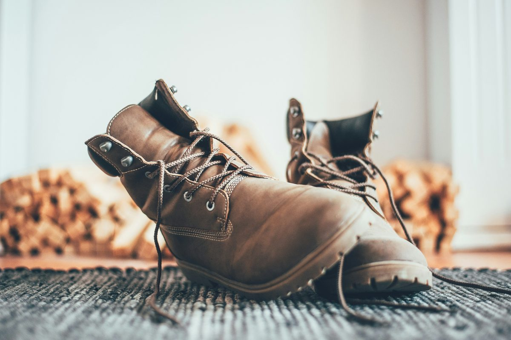
Kläder
- Vandringskängor
- Ullstrumpor
- Underställ
- Fleece
- Skaljacka
- Skalbyxor
- Mössa
- Buff
- Handskar
- Regnkläder
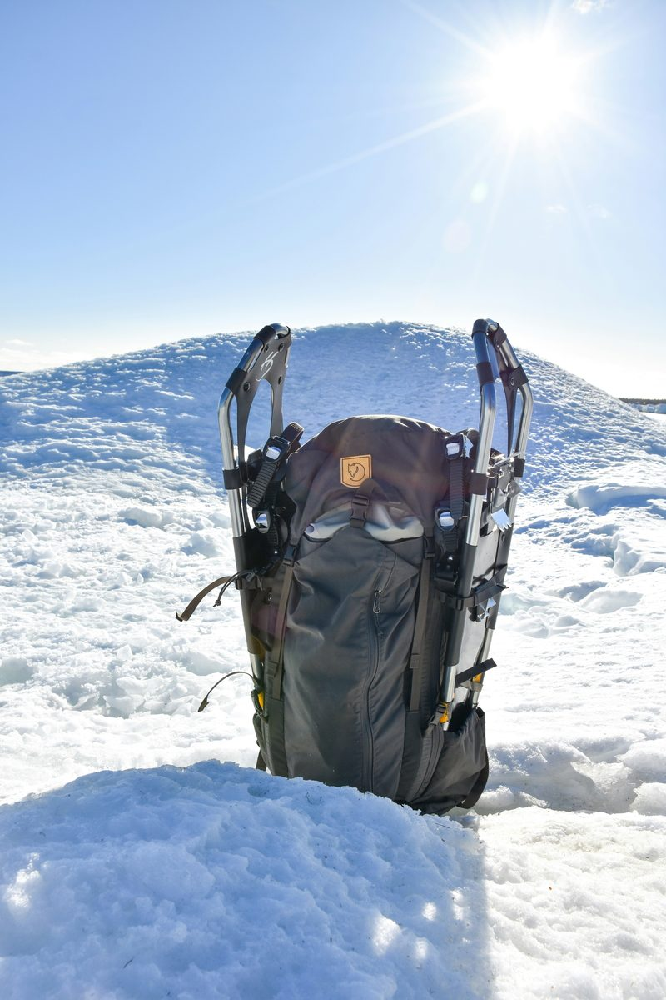
Ryggsäck
- Ryggsäck 25–35 L (dagstur)
- Ryggsäck 50–70 L (flera dagar)
- Regnskydd
- Packpåsar
- Sittunderlag
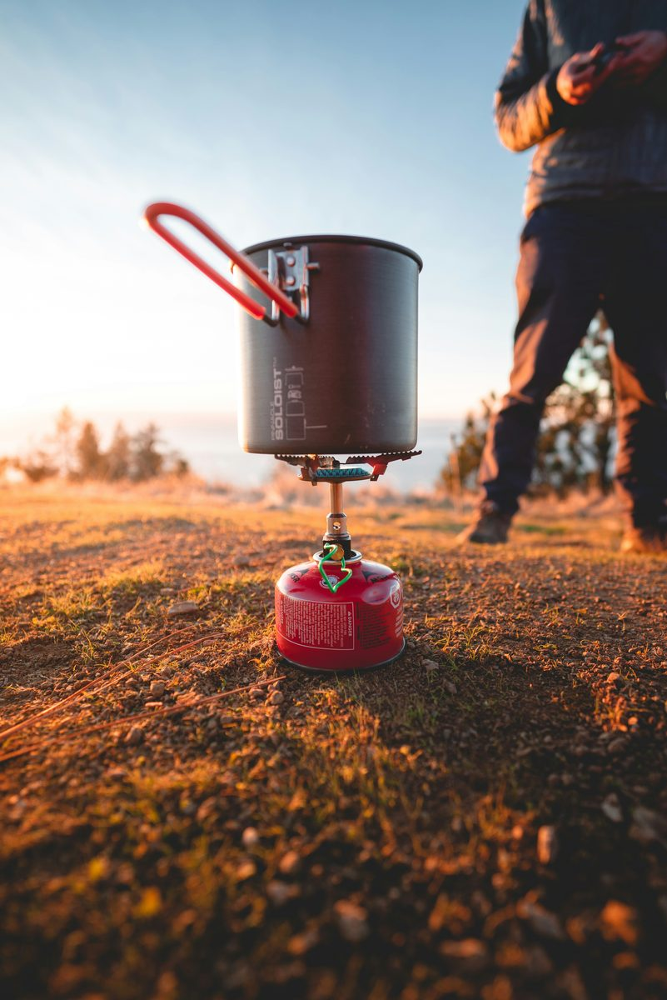
Mat & vatten
- Vattenflaska
- Vattenfilter
- Stormkök
- Bränsle
- Tändstål
- Kåsa
- Bestick
- Snacks
- Frystorkad mat
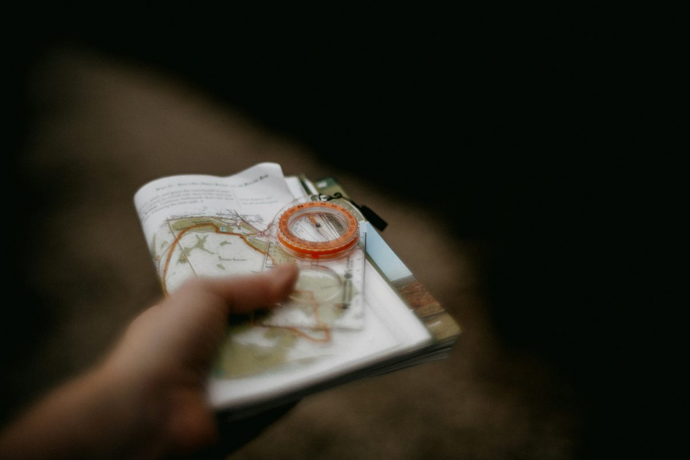
Navigation
- Karta
- Kompass
- GPS
- Mobil
- Powerbank
- Extra batterier
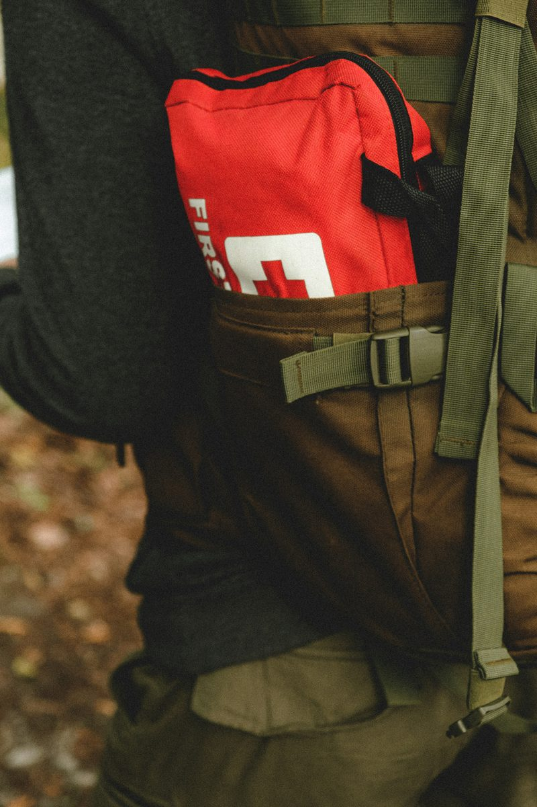
Säkerhet
- Första hjälpen-kit
- Visselpipa
- Ficklampa
- Pannlampa
- Kniv
- Nödfilt
- Solkräm
- Myggmedel
Packlista efter årstid
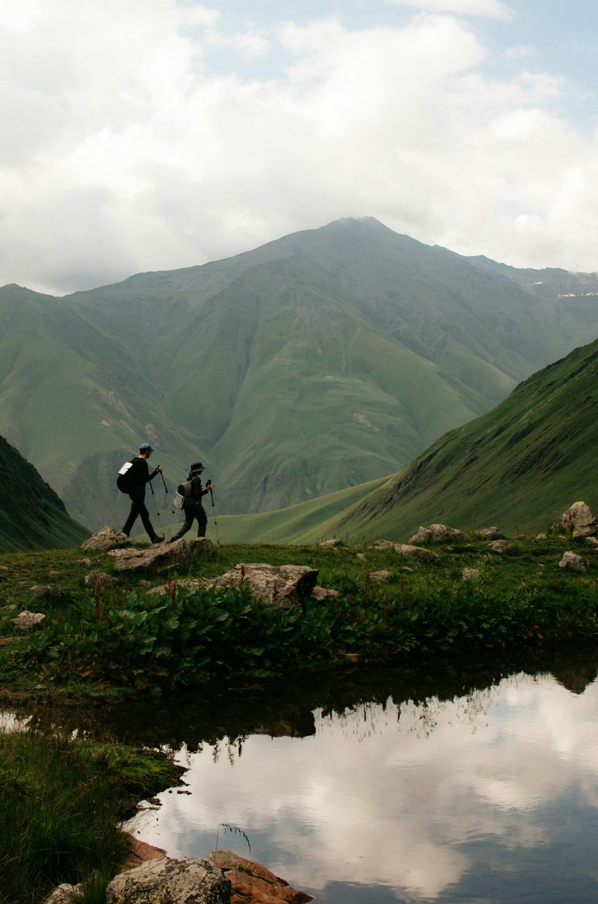
Vår
- Skaljacka
- Mössa
- Vantar
- Vattentäta skor
- Gamascher
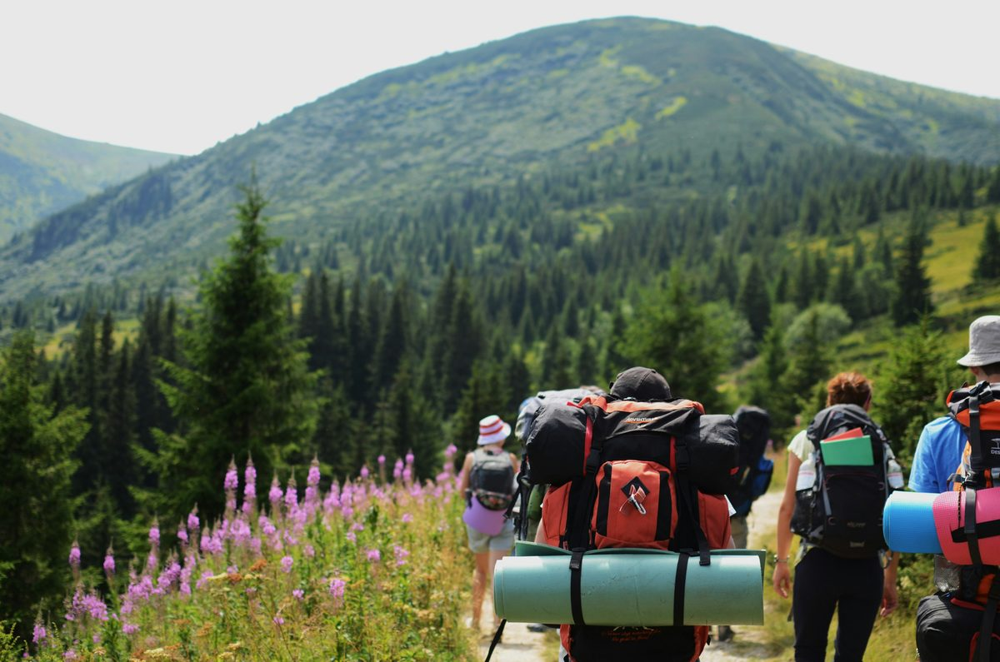
Sommar
- Solglasögon
- Solkräm SPF50
- Keps
- Shorts
- Myggmedel
- Extra vatten
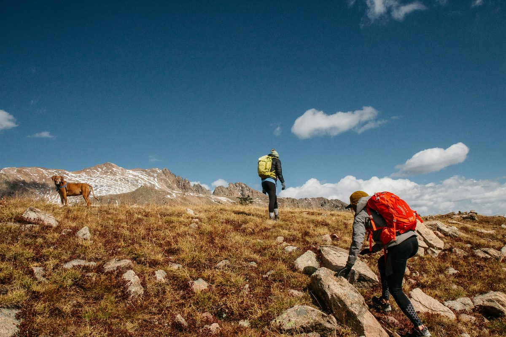
Höst
- Fleece
- Regnjacka
- Varm mössa
- Extra underställ
- Handskar
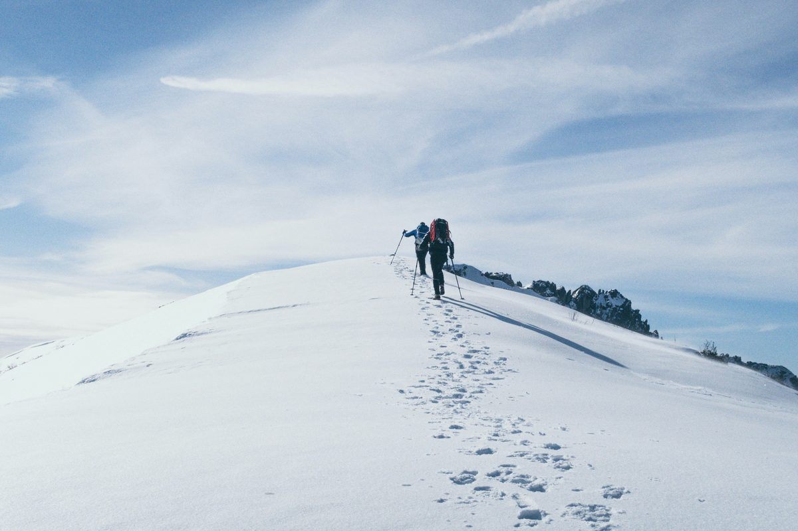
Vinter
- Dunjacka
- Ullunderställ
- Isdubbar
- Termos
- Snöspade
- Broddar
- Extra batterier
Anpassa utrustning efter turen
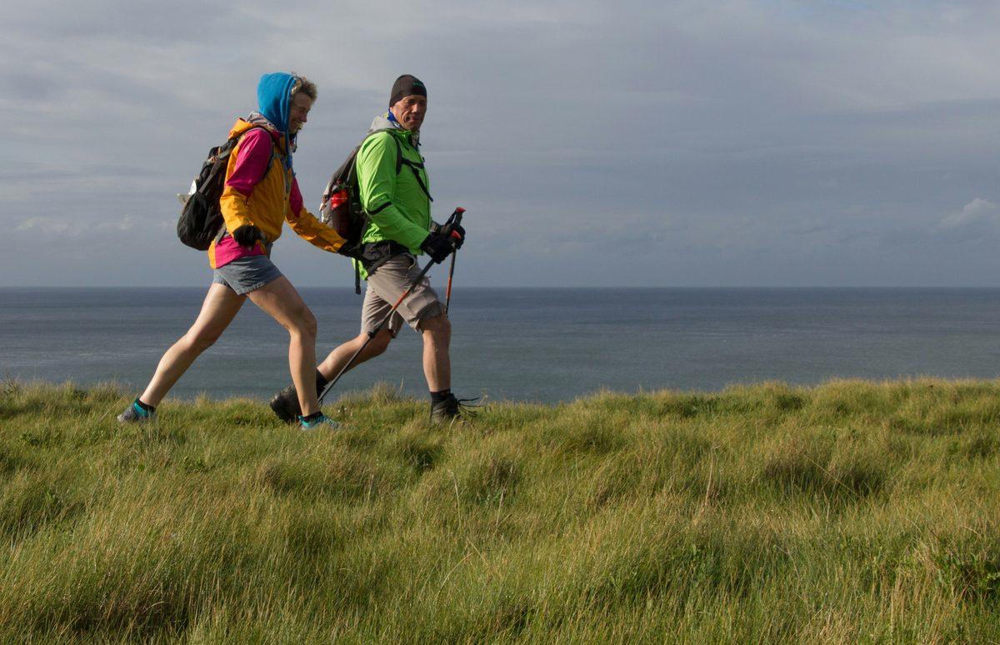
Dagstur
- 20–30 liters ryggsäck
- Vatten
- Fika
- Regnjacka
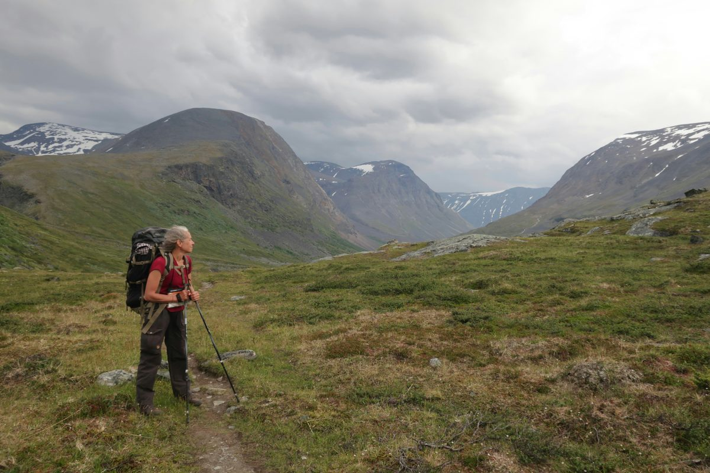
Helgtur
- Stormkök
- Tält
- Sovsäck
- Extra kläder
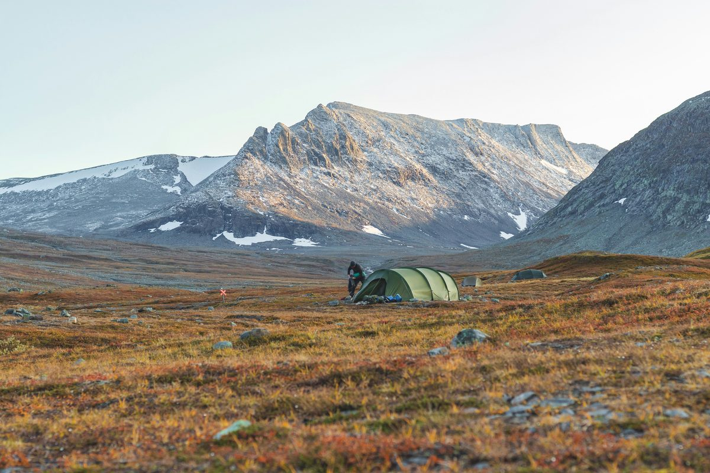
Fjällvandring
- GPS
- Karta
- Kompass
- Nödsändare
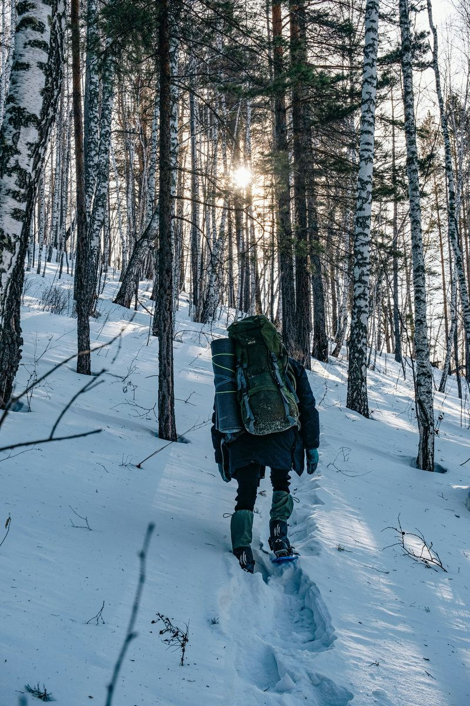
Vintertur
- Broddar
- Termos
- Dunjacka
- Pannlampa